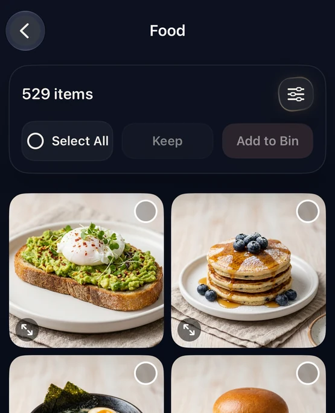
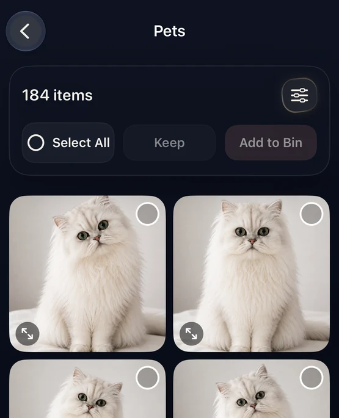

The short answer
To clean up photos on iPhone safely, start with lower-risk clutter such as expired screenshots and unwanted large videos. Then review exact duplicates and similar shots in smaller batches, keeping control of every deletion decision.
A good cleanup process should feel controlled. Your photo library can contain memories, documents, receipts, screenshots, and personal context that is hard to replace. If a tool encourages you to delete hundreds of photos without review, slow down.
The safest order for cleaning an iPhone photo library
Start with the choices that require the least judgment, then move toward the groups where small differences matter. A practical order is: confirm your sync or backup setup, clear disposable screenshots and unwanted large videos, review exact duplicates, compare similar shots, and only then finalize deletion.
1. Confirm what is backed up
Before removing anything, check that your photo library is syncing or backed up the way you expect. If you use iCloud Photos, remember that deleting on one device also deletes the item from other devices using the same synced library. Apple explains how syncing and deletion work in its iCloud Photos guidance.
2. Start with lower-risk clutter
Begin with categories where decisions are usually simpler:
- Expired screenshots, tickets, and temporary reference images.
- Large videos you no longer want.
- Obvious test shots or accidental captures.
- Exact copies of the same photo or video.
3. Review exact duplicate photos
Apple Photos can identify duplicate media and place it in its Duplicates collection. That makes Apple’s built-in tool a good first step. The collection appears only after Photos has found duplicate items, so it may not be visible in every library. See Apple’s current Duplicates instructions or our guide to deleting duplicate photos on iPhone.
4. Compare similar photos carefully
Similar photos need more judgment than exact copies. Two shots can look related while differing in expression, sharpness, framing, timing, or personal meaning. A safer workflow groups likely related shots, then lets you decide what—if anything—should leave the library. Our similar photos vs. duplicate photos guide shows the distinction.
5. Work in smaller, focused batches
A large item count is a reason to narrow the task, not select everything at once. Open one category, scan a manageable set, and move only photos you have actually reviewed.


How CleanLens supports review-first cleanup
CleanLens helps surface exact duplicates, similar shots, screenshots, large media, and other cleanup opportunities. Categories help you narrow the task; they are not automatic deletion recommendations. You select what moves to the Bin, review the Bin, and make the final deletion request through the normal iOS confirmation flow.
Best use: choose a focused category, compare the photos, and move only reviewed items forward. CleanLens is not built around blind auto-delete.
Safe iPhone photo cleanup checklist
- Confirm your sync or backup setup before deleting.
- Start with expired screenshots and unwanted large videos.
- Review exact duplicate groups.
- Compare similar shots for focus, expression, framing, and meaning.
- Work in smaller categories or batches.
- Review selected items before requesting deletion.
- Keep Recently Deleted available until you are confident. Apple says deleted photos normally remain recoverable there for 30 days.
For recovery steps and current navigation, see Apple’s Recently Deleted instructions.
Frequently asked questions
What is the safest order for cleaning photos on iPhone?
Start with expired screenshots and unwanted large videos, then review exact duplicates, and handle similar shots last. Work in small batches and check Recently Deleted before permanently clearing anything.
Does CleanLens delete photos automatically?
No. CleanLens places selected items into a review flow. You make the final decision, and iOS requests confirmation when deletion is requested.
Are duplicate and similar photos the same?
No. Duplicate photos are copies of the same media, while similar photos are separate shots that may differ in focus, expression, framing, or personal meaning.
Does CleanLens require an account?
No. CleanLens is designed for on-device photo analysis and does not require an account.
Clean in focused passes
Clean your library in smaller, reviewable passes.
CleanLens helps surface duplicates, similar shots, screenshots, large media, and other cleanup opportunities. You review first and decide what moves to the Bin.